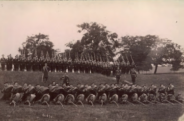
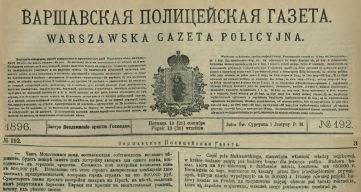
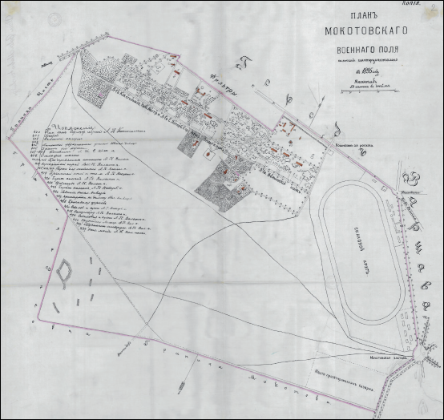
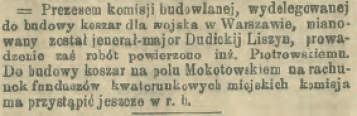
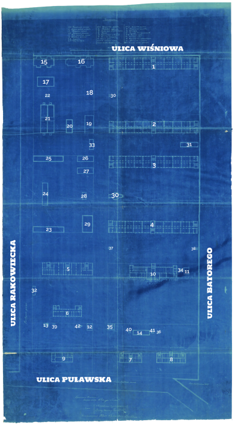
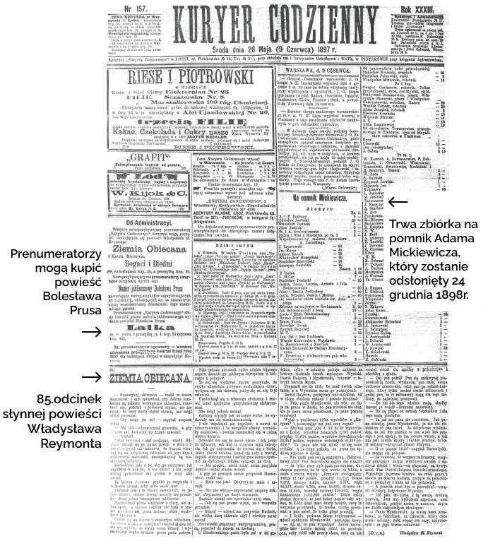
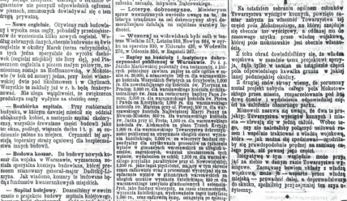
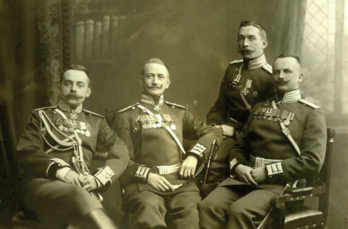
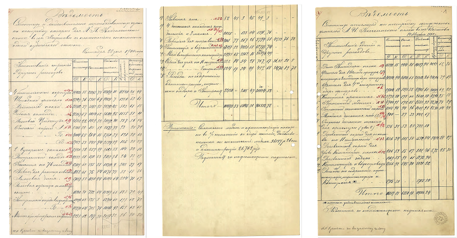
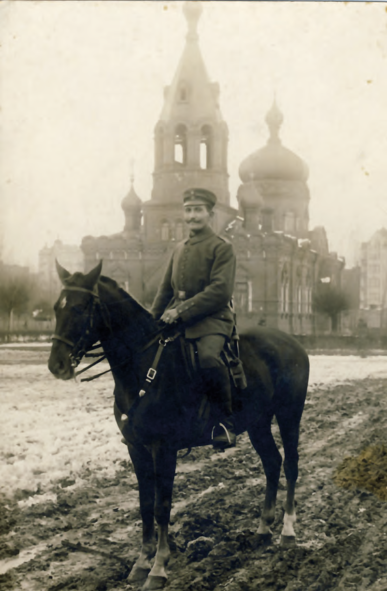

MOKOTÓW | WARSZAWA | POLSKA
Mokotowskie Pole Wojenne leżące poza granicami miasta, było wykorzystywane przez wojska carskie do ćwiczeń od 1818 r. Obszar 200 ha był ograniczony dzisiejszymi ulicami: Grójecką, Nowowiejską, Polną i Rakowiecką. Latem pułki Keksholmski, Wołyński, Sankt-Petersburski i Litewski miały tu swoje obozy, zimą przenosiły się do miasta

Rok 1888 lub 1889. Żołnierze Keksholmskiego Pułku.


Na planie pojawiają się nazwy Rakowiec i Czyste, Filtry, Rogatka Koszykowska. Owalny kształt to tor wyścigów konnych. Na dole planu widzimy zaznaczoną polną drogę (dziś ulica Rakowiecka) jako granicę Mokotowa, a po prawej stronie Rogatki Mokotowskie i Plac Mokotowski (dziś Unii Lubelskiej), do którego dochodzą ulice Szucha i Bagatela. W prawym dolnym rogu zaznaczono miejsce projektowanych koszar.

Kurjer Warszawski, 9 czerwca 1897 r.
Wiktor Junosza-Piotrowski (1855-1917) polski architekt.

Na dole zaznaczono ulicę Nowoaleksandryjską (dziś Puławska). Widoczne są też podpisy członków komisji prawdopodobnie zatwierdzającej plany. Zbiór Matwieja Kriwoszejewa, Archiwum Państwowe m.st. Warszawy.
Budynek szkoły w prawym górnym rogu (nr 1). Widoczne 3 klatki schodowe i charakterystyczny podział na pomieszczenia z 3 oknami i 2 filarami od strony korytarza. Łazienki do dziś w tych samych miejscach
Budynek batalionowy nr 2 to siedziba Naczelnej Dyrekcji Archiwów Państwowych (ulica Rakowiecka 2d). Budynek 3 znika z map w trakcie II Wojny Światowej. Budynek 4 zostaje wyburzony po wojnie. Na ich miejscu powstał gmach Ministerstwa Spraw Wewnętrznych i Administracji.
1, 2, 3, 4 – dwie pary budynków batalionowych przedzielonych dużymi placami, na które wychodziły wyjścia z głównej klatki schodowej. Budynki 1 identyczny jak 3, natomiast 2 i 4 to ich lustrzane odbicia,
5 – budynek grupy szkoleniowej (istniejący),
6 – pokój przyjęć (istniejący),
7, 8 – budynki oficerskie (budynek 7 istniejący),
9 – dom komendanta pułku (istniejący),
10 – sztab (istniejący),
11, 12 – lodownia,
13, 14 – szopa na drzewo,
15, 16 – składzik kapusty; dziś budynek nr 16 jest oznaczony literą D,
17 – kuźnia pułkowa,
18 – miejsce na piekarnię; dziś 18 to budynek A (później opisany jako żołnierski bufet),
19 – łaźnia,
20 – otwarta szopa dla powozów,
21 – stajnia pułkowa,
22 – dół na gnojówkę/nawóz,
23, 24, 25 – pomieszczenia dla pojazdów,
36, 37, 38, 39, 40, 41 – śmietniki,
26, 27 – składy żywności suchej,
28 – skład amunicji/nabojów,
29 – arsenał,
30 – pawilon dla muzyków,
31, 32 – skład węgla,
33 – pomieszczenie dla pojazdów,
34 – silnik do produkcji elektryczności,
35 – pralnia i magiel,
42, 35 – latryna dla służby


Już powstała komisja do budowy koszar. Pomimo, że budowa koszar ma ruszyć lada chwila, redaktor nadal rozważa pomysł odkupienia przez miasto od wojska terenu Pola Mokotowskiego.

Oficerowie Keksholmskiego Pułku

Na rozliczeniu czerwonym atramentem naniesiono numerację budynków z niebieskiego planu. Jest też punkt nr 43 wodociąg (ołówkiem dopisane: i kanalizacja).
| Rok 1900 podsumowanie kosztów | |
|---|---|
| Planowano | 1 034 378 rubli 53 kopiejki |
| Wydano | 966 232 ruble 72 kopiejki |
| Zaoszczędzono | 68 145 rubli 81 kopiejek |
| Rok 1902 na drugi etap budowy | |
|---|---|
| Planowano | 116 217 rubli 15 kopiejek |
| Wydano | 109 366 rubli 24 kopiejki |
| Zaoszczędzono | 6 850 rubli 91 kopiejek |
W prasie regularnie ukazywały się ogłoszenia dotyczące licytacji ofert na materiały do budowy koszar.

Narodowe Archiwum Cyfrowe, Biblioteka Narodowa Polona, CRISPA biblioteka cyfrowa Uniwersytetu Warszawskiego, Archiwum
Państwowe w Warszawie, Muzeum Powstania Warszawskiego, Centrum Fotografii Muzeum Warszawy, Polska Agencja Prasowa,
zbiory Roberta Marcinkowskiego, Wikipedia.org, Fotopolska.eu, kolejkamarecka.pun.pl, domena publiczna oraz zbiory autorów.
Zdjęcia współczesne (jeśli nie opisano inaczej): Joanna Kamola-Okońska.
Wycinki z dawnej prasy dot. Mokotowa dzięki podpowiedziom ze strony: moko.waw.pl.
Autorzy dokonali wszelkich starań w celu ustalenia praw autorskich lub majątkowych do prezentowanych materiałów.